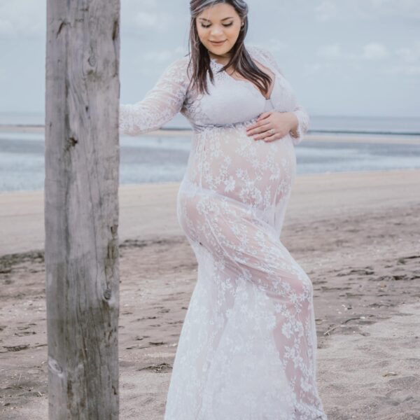

Simple milestone portraits
A clean session focused on expression, curiosity, and your baby’s stage right now.
1st year photography
Lana Sky’s site treats “1st Year” as its own category alongside maternity, newborn, and family. This new page brings that missing chapter into your site so the structure feels complete.

A clean session focused on expression, curiosity, and your baby’s stage right now.

A celebratory gallery that still feels timeless rather than overly themed.

Add parent and sibling portraits so the session tells the full story of this season.
Why add this page
Adding a dedicated 1st Year page makes your site flow much more like Lana Sky’s information architecture, where clients can move naturally from maternity to newborn to milestone to family photography.